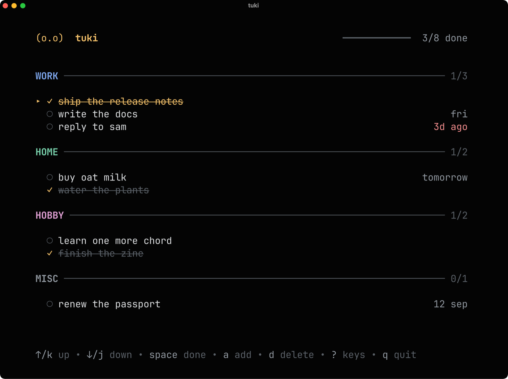

Everything on one screen, and nothing you didn't ask for.
Try it here
This is the real interface, rebuilt in the page. Use it with the keyboard.
- ↑↓kjmove
- spacecomplete
- aadd
- eedit
- ddelete
- uundo
- tchange group
- /search
- tabfilter
- ?every key
Install
Pick whichever you'd normally reach for.
$ curl -fsSL https://raw.githubusercontent.com/rmpato/tuki/main/install.sh | shInstalls to ~/.local/bin and adds it to your PATH if it
isn't already there. Every download is checked against the release's sha256
before anything is written.
Options: --dir <path>,
--version <tag>, --no-modify-path.
$ go install github.com/rmpato/tuki@latestThis lands in $(go env GOPATH)/bin — usually ~/go/bin,
which isn't on your PATH by default. Add it:
$ export PATH="$HOME/go/bin:$PATH"$ git clone https://github.com/rmpato/tuki
$ cd tuki
$ make installGo 1.24 or newer. make check runs the formatter, vet, and the tests.
Grab an archive for your platform from the
releases page, unpack it,
and move tuki somewhere on your PATH.
$ tar -xzf tuki_*_darwin_arm64.tar.gz
$ mv tuki ~/.local/bin/macOS, Linux, and Windows; amd64 and arm64.
Staying current
$ tuki updatetuki checks for a newer version, shows you what changed, and asks before replacing anything. The download is verified, and your current binary is kept aside until the new one is safely in place.
Using it
Type tuki and your tasks are there. That's the whole idea.
Add things
$ tuki add "buy oat milk" --tag home --due tomorrow
$ tuki add "write the docs #work @fri"Groups and due dates can be flags or written inline. Due dates read the way
you'd say them: today, tomorrow, fri,
+3d, 2w, 2026-08-20.
Cross them off
$ tuki list
$ tuki done 12
$ tuki clearCompleted tasks stay where they are, crossed out and faded, until you clear them. Nothing vanishes the moment you tick it.
It behaves in a pipe
When output isn't a terminal, tuki list switches to tab-separated
columns — id, done|todo, tag,
due, text. So the usual things just work:
$ tuki list | awk -F'\t' '$2 == "todo" { print $5 }'
$ tuki list --json | jq '.[] | select(.tag == "work")'
$ tuki list --todo --tag work | wc -lRunning bare tuki in a pipe lists too, rather than
opening an interface nobody can see.
What tuki doesn't do
- no accounts, servers, or sync
- no streaks or points
- no notifications, ever
- no productivity score
- no telemetry
- no subscription
Your tasks live in one JSON file — ~/.local/share/tuki/tasks.json
— written atomically, readable in any editor, and yours to back up or delete.
tuki path tells you exactly where it is. Everything works offline
because there is nothing to be online for.
The only personality switches are celebrate and judge,
both in that same file. Turn them off and tuki goes quiet. There's nothing else
to turn off, because there's nothing else.
tuki doesn't mean anything. That's the point — it leaves room for a creature.
Built with
- Bubble Teathe interface
- Lip Glossthe styling
- Bubblesinput, viewport, progress
- Fangthe command line
Written in Go. Around 7 MB, starts instantly, does one thing.